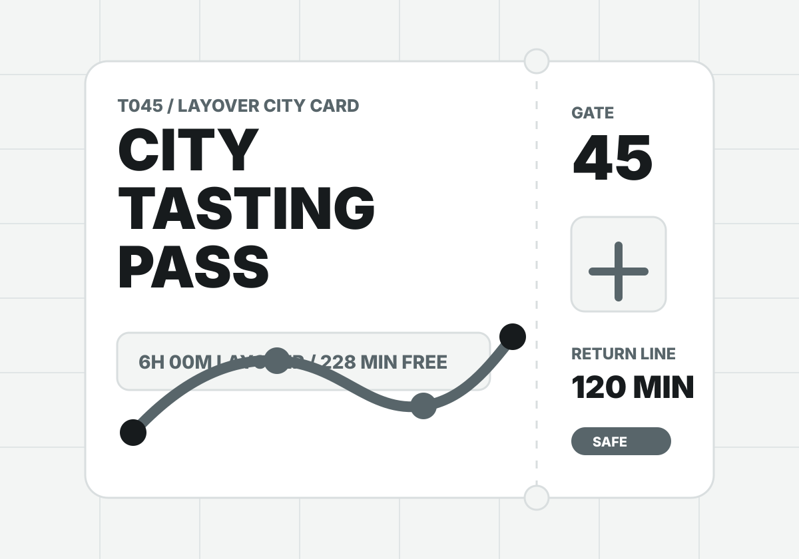

T045 / Airport layover card
轉機不是空白時間，是一張城市試吃券。
把轉機時數、簽證狀態、通關壓力、行李與想做的事放進來，工具會替你判斷能不能出境、只適合做一件事，或該留在機場把精神補滿。

Layover appetite
選你想換到的城市味道
Result
先設定轉機條件，再生成一張可分享的城市卡。
結果會包含可行度、實際可用分鐘、建議玩法、不可踩的紅線、社群分享文與 ChillOut prompt。
T045 / Airport layover card
把轉機時數、簽證狀態、通關壓力、行李與想做的事放進來，工具會替你判斷能不能出境、只適合做一件事，或該留在機場把精神補滿。

Layover appetite
Result
結果會包含可行度、實際可用分鐘、建議玩法、不可踩的紅線、社群分享文與 ChillOut prompt。